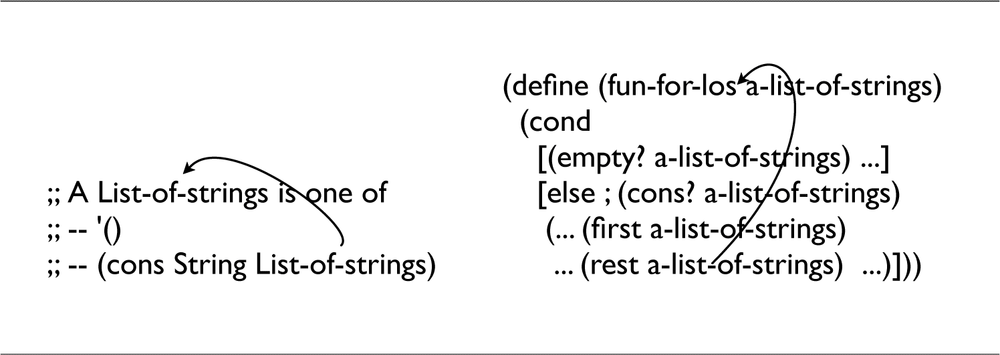
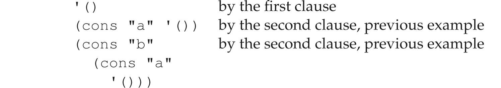
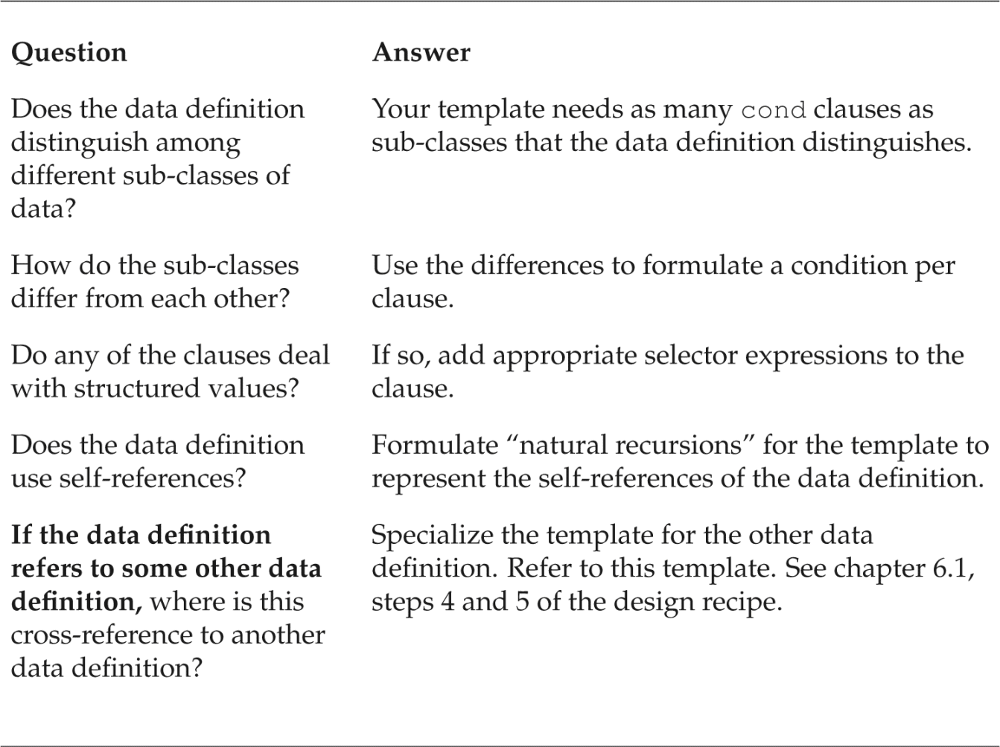
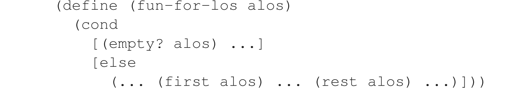
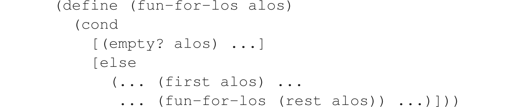
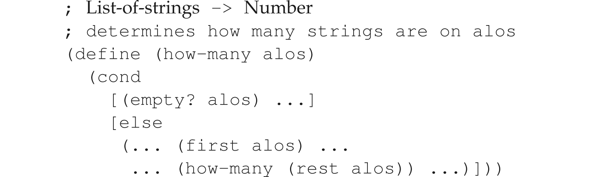
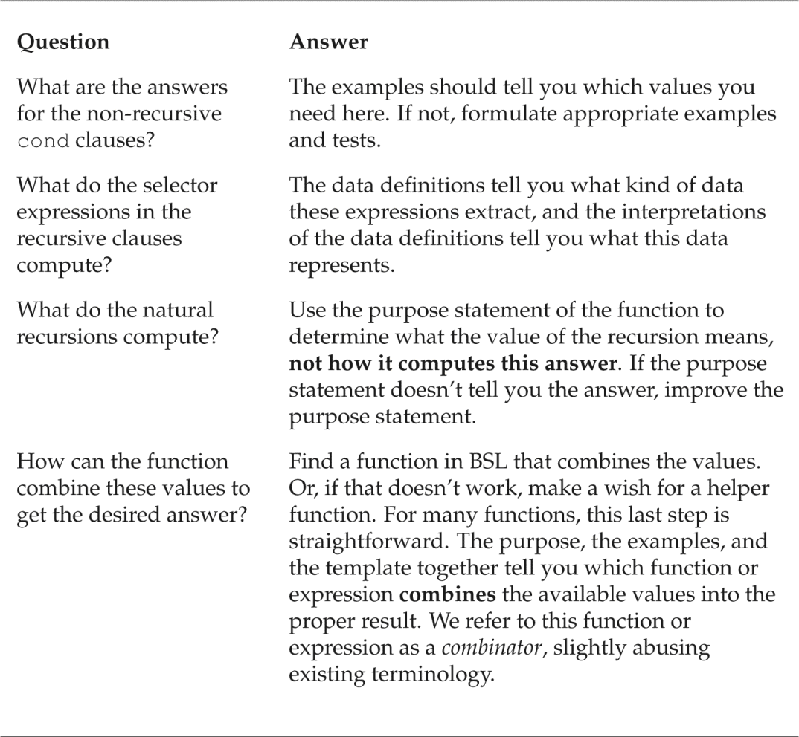
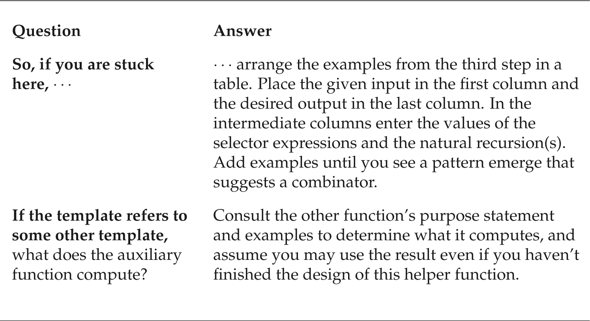
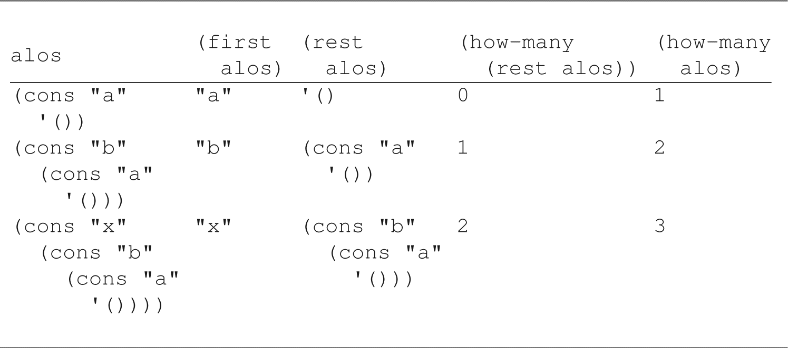
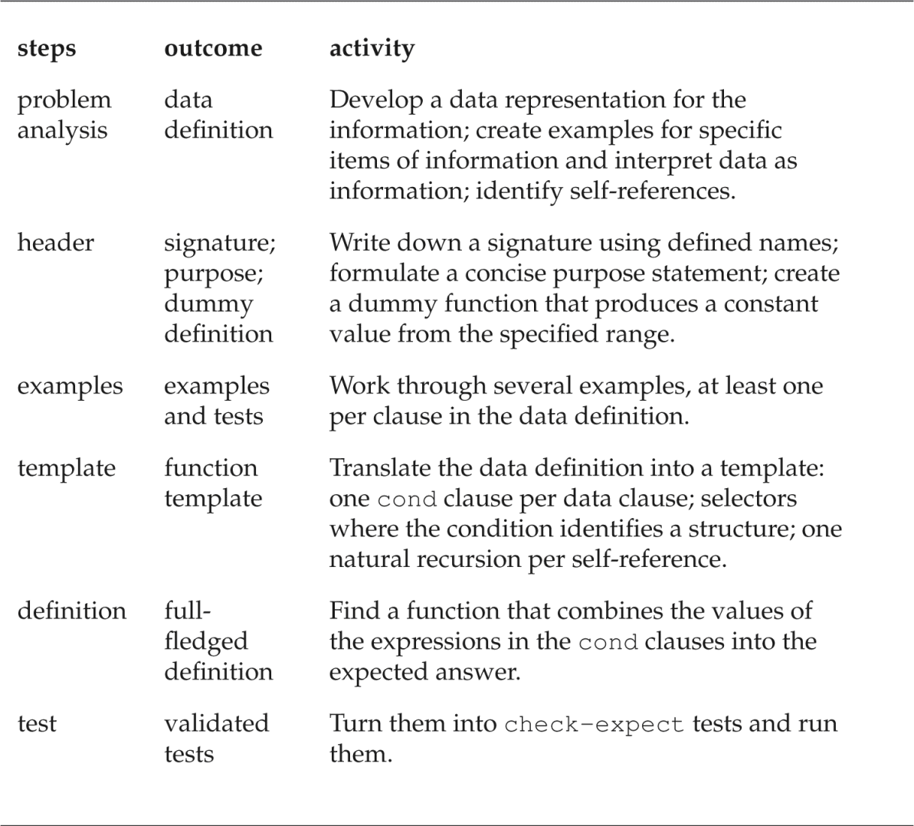

9 Designing with Self-Referential Data Definitions
At first glance, self-referential data definitions seem to be far more complex than those for mixed data. But, as the example of contains-flatt? shows, the six steps of the design recipe still work. Nevertheless, in this section we generalize the design recipe so that it works even better for self-referential data definitions. The new parts concern the process of discovering when a self-referential data definition is needed, deriving a template, and defining the function body:
1. If a problem statement is about information of arbitrary size, you need a self-referential data definition to represent it. At this point, you have seen only one such class, List-of-names. The left side of figure 51 shows how to define List-of-strings in the same way. Other lists of atomic data work the same way.

Figure 51: Arrows for self-references in data definitions and templates
Numbers also seem to be arbitrarily large. For inexact numbers, this is an illusion. For precise integers, this is indeed the case. Dealing with integers is therefore a part of this chapter.
For a self-referential data definition to be valid, it must satisfy two conditions. First, it must contain at least two clauses. Second, at least one of the clauses must not refer back to the class of data that is being defined. It is good practice to identify the self-references explicitly with arrows from the references in the data definition back to the term being defined; see figure 51 for an example of such an annotation.
You must check the validity of self-referential data definitions with the creation of data examples. Start with the clause that does not refer to the data definition; continue with the other one, using the first example where the clause refers to the definition itself. For the data definition in figure 51, you thus get lists like the following three:

If it is impossible to generate examples from the data definition, it is invalid. If you can generate examples but you can’t see how to generate increasingly larger examples, the definition may not live up to its interpretation.
2. Nothing changes about the header material: the signature, the purpose statement, and the dummy definition. When you do formulate the purpose statement, focus on what the function computes not how it goes about it, especially not how it goes through instances of the given data.
Here is an example to make this design recipe concrete:
; List-of-strings -> Number
; counts how many strings alos contains
(define (how-many alos)
0)
The purpose statement clearly states that the function just counts the strings on the given input; there is no need to think ahead about how you might formulate this idea as a BSL function.
3. When it comes to functional examples, be sure to work through inputs that use the self-referential clause of the data definition several times. It is the best way to formulate tests that cover the entire function definition later.
For our running example, the purpose statement almost generates functional examples by itself from the data examples:
The first row is about the empty list, and we know that empty list contains nothing. The second row is a list of one string, so 1 is the desired answer. The last row is about a list of two strings.
4. At the core, a self-referential data definition looks like a data definition for mixed data. The development of the template can therefore proceed according to the recipe in chapter 6. Specifically, we formulate a cond expression with as many cond clauses as there are clauses in the data definition, match each recognizing condition to the corresponding clause in the data definition, and write down appropriate selector expressions in all cond lines that process compound values.
Figure 52 expresses this idea as a question-and-answer game. In the left column it states questions about the data definition for the argument, and in the right column it explains what the answer means for the construction of the template.

Figure 52: How to translate a data definition into a template
If you ignore the last row and apply the first three questions to any function that consumes a List-of-strings, you arrive at this shape:

Recall, though, that the purpose of a template is to express the data definition as a function layout. That is, a template expresses as code what the data definition for the input expresses as a mix of English and BSL. Hence all important pieces of the data definition must find a counterpart in the template, and this guideline should also hold when a data definition is self-referential—contains an arrow from inside the definition to the term being defined. In particular, when a data definition is self-referential in the ith clause and the kth field of the structure mentioned there, the template should be self-referential in the ith cond clause and the selector expression for the kth field. For each such selector expression, add an arrow back to the function parameter. At the end, your template must have as many arrows as we have in the data definition.
Figure 51 illustrates this idea with the template for functions that consume List-of-strings shown side by side with the data definition. Both contain one arrow that originates in the second clause—the rest field and selector, respectively—and points back to the top of the respective definitions.
Since BSL and most programming languages are text-oriented, you must use an alternative to the arrow, namely, a self-application of the function to the appropriate selector expression:

We refer to a self-use of a function as recursion and in the first four parts of the book as natural recursion.
For the curious among our readers, the design recipe for arbitrarily large data corresponds to so-called “proofs by induction” in mathematics, and the “leap of faith” represents the use of the induction hypothesis for the inductive step of such a proof. Logic proves the validity of this proof technique with an Induction Theorem.
5. For the function body we start with those cond lines without recursive function calls, known as base cases.The corresponding answers are typically easy to formulate or already given as examples.
Then we deal with the self-referential cases. We start by reminding ourselves what each of the expressions in the template line computes. For the natural recursion we assume that the function already works as specified in our purpose statement. This last step is a leap of faith, but as you will see, it always works.
The rest is then a matter of combining the various values.
Figure 53 formulates the first four questions and answers for this step. Let’s use this game to complete the definition of how-many. Renaming the fun-for-los template to how-many gives us this much:


Figure 53: How to turn a template into a function definition
As the functional examples already suggest, the answer for the base case is 0. The two expressions in the second clause compute the first item and the number of strings in (rest alos). To compute how many strings there are on all of alos, the function just needs to add 1 to the value of the latter expression:
(define (how-many alos)
(cond
[(empty? alos) 0]
[else (+ (how-many (rest alos)) 1)])
Felix Klock suggested this table-based approach to guessing the combinator.
Finding the correct way to combine the values into the desired answer isn’t always as easy. Novice programmers often get stuck with this step. As figure 54 suggests, it is a good idea to arrange the functional examples into a table that also spells out the values of the expressions in the template. Figure 55 shows what this table looks like for our how-many example. The left-most column lists the sample inputs, while the right-most column contains the desired answers for these inputs. The three columns in between show the values of the template expressions: (first alos), (rest alos), and (how-many (rest alos)), which is the natural recursion. If you stare at this table long enough, you recognize that the result column is always one more than the values in the natural recursion column. You may thus guess that
(+ (how-many (rest alos)) 1)
is the expression that computes the desired result. Since DrRacket is fast at checking these kinds of guesses, plug it in and click RUN. If the examples-turned-into-tests pass, think through the expression to convince yourself it works for all lists; otherwise add more example rows to the table until you have a different idea.

Figure 54: Turning a template into a function, the table method

Figure 55: Tabulating arguments, intermediate values, and results
The table also points out that some selector expressions in the template are possibly irrelevant for the actual definition. Here (first alos) is not needed to compute the final answer—which is quite a contrast to contains-flatt?, which uses both expressions from the template.
As you work your way through the rest of this book, keep in mind that, in many cases, the combination step can be expressed with BSL’s primitives, say, +, and, or cons. In some cases, though, you may have to make a wish, that is, design an auxiliary function. Finally, in yet other cases, you may need nested conditions.
6. Finally, make sure to turn all examples into tests, that these tests pass, and that running them covers all the pieces of the function.
Here are our examples for how-many turned into tests:
(check-expect (how-many '()) 0)
(check-expect (how-many (cons "a" '())) 1)
(check-expect
(how-many (cons "b" (cons "a" '()))) 2)
Remember, it is best to formulate examples directly as tests, and BSL allows this. Doing so also helps if you need to resort to the table-based guessing approach of the preceding step.
Figure 56 summarizes the design recipe of this section in a tabular format. The first column names the steps of the design recipe, and the second the expected results of each step. In the third column, we describe the activities that get you there. The figure is tailored to the kind of self-referential list definitions we use in this chapter. As always, practice helps you master the process, so we strongly recommend that you tackle the following exercises, which ask you to apply the recipe to several kinds of examples.

Figure 56: Designing a function for self-referential data
You may want to copy figure 56 onto one side of an index card and write down your favorite versions of the questions and answers for this design recipe onto the back of it. Then carry it with you for future reference.